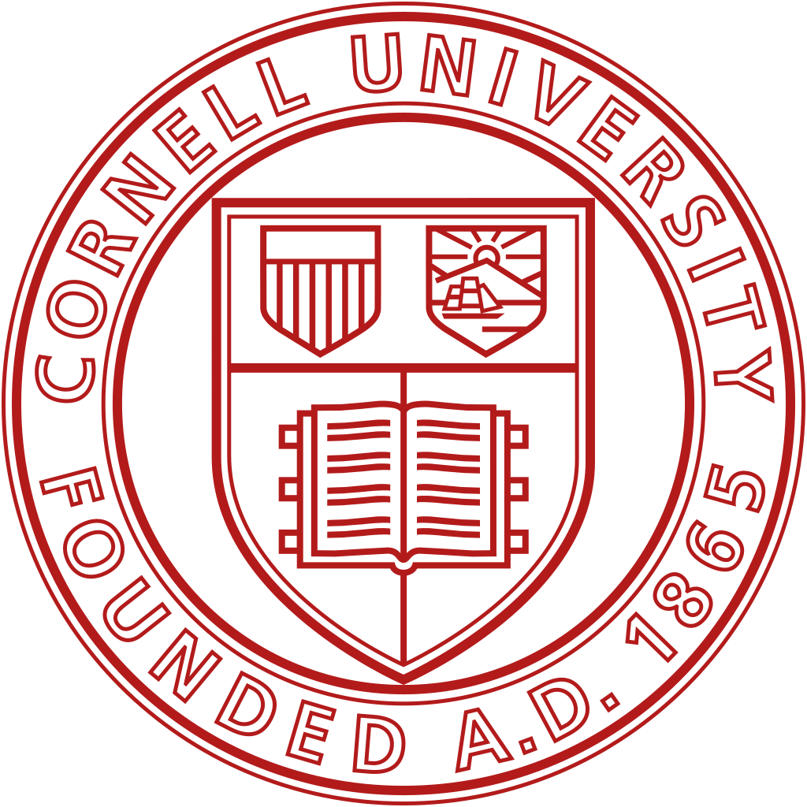
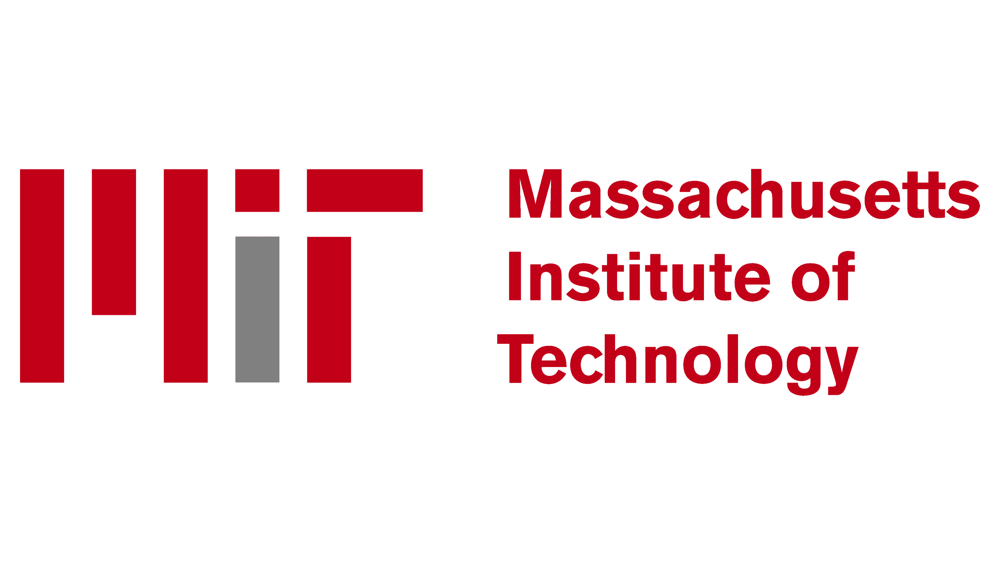
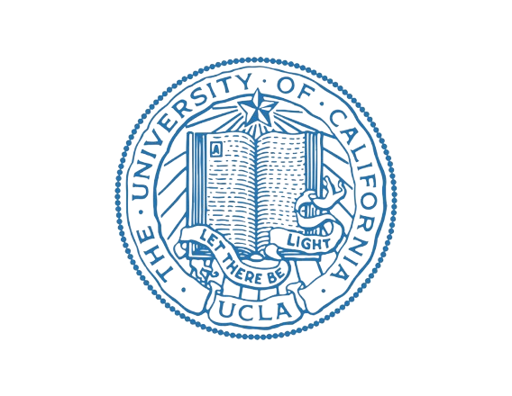

Investigators:
Ross M. Brown, entrepreneur, philanthropist, and Caltech alumnus (BS
'56,
MS '57)
established the Brown
Investigator Awards in 2020. Caltech's commitment to high-risk, high-reward science is mirrored in the
Brown Institute for Basic Sciences support for curiosity-driven basic research in chemistry and physics.
Brown and Caltech have become partners in this effort to invest in and promote basic science. With a
$400 million pledge, Brown established the Brown Institute for Basic Sciences at Caltech and entrusted
the Institute with oversight of the Brown Investigator Awards program. Caltech will not nominate its own
investigators or compete for the awards but will ensure that the program remains true to the vision of
the founder. Nominees will be evaluated by an independent scientific review board that will recommend
grant winners. A select number of research universities from across the country will be invited to
nominate faculty members, who are within 10 years of having received tenure, who are doing innovative
fundamental research in the physical sciences.
Under the new arrangement, Caltech will grant a minimum of eight Brown Investigator Awards per year,
each of which will provide the awardee with up to $2 million in research funding over five years.
Caltech also will host an annual symposium for the selected scholars.
2025 Investigators:
Dmitry Abanin
To develop a new theoretical and computational framework to describe the emergent properties
of
quantum materials and synthetic quantum systems away from thermal equilibrium.
Dmitry Abanin's
Research Website
Laszlo Kürti
To invent chemical strategies for constructing stable neutral polynitrogen cages—molecules
made
entirely from nitrogen atoms that store extraordinary energy. These elusive structures
remain
intact under ambient conditions yet release energy on demand without combustion and
decompose
cleanly into hot nitrogen gas, offering a revolutionary platform for propulsion and energy
storage.
Laszlo Kürti's
Research Website

Mark Levin
To translate the lessons learned from skeletal editing of aromatic compounds (stable
chemicals
with a flat ring structure) to reactions with aliphatic compounds (three-dimensional, more
reactive chemicals), with the goal of providing access to unusual compounds that are
inaccessible using traditional chemical synthesis.
Mark
Levin's Research Website
Brad Ramshaw
To develop a new technique using ultrasound to probe the electronic states of atomically
thin
materials.
Brad
Ramshaw's Research Website


Cindy Regal
To demonstrate quantum entanglement—a connection between particles like photons or atoms
that
persists despite their physical distance—with objects of larger mass than have been
entangled
before.
Cindy
Regal's Research Website
Xavier Roy
To design and explore materials in which electrons face competing pathways for motion,
giving
rise to complex behaviors that, if controlled, could enable new kinds of quantum
technologies.
Xavier
Roy's
Research Website


Hailiang Wang
To expand electrocatalysis to convert inorganic waste molecules, such as CO2 and NOx, into
valuable and functional organic compounds containing multiple carbon–carbon and
carbon–nitrogen
bonds.
Hailiang Wang's
Research Website
Joel Yuen-Zhou
For theoretical and computational work to utilize the sensitivity of some chemical reactions
to
the spin of the electron in photoredox catalysis to make the reaction select one of two
enantiomers (mirror-image forms of compounds).
Joel
Yuen-Zhou's
Research Website

2024 Investigators:

James Analytis
To develop new methods using focused ion beams to change the chemical composition of
two-dimensional materials with nanometer resolution, potentially giving rise to new
electronic states, including superconductivity.
James Analytis'
Research Website
Gordana Dukovic
To develop methods for chemical structure determination of biomolecules bound to inorganic
nanoparticles—materials that could be useful for the conversion of solar energy directly
into new chemical bonds.
Gordana Dukovic's
Research Website

Nuh Gedik
To develop a new kind of microscopy that images electrons photo-emitted from a surface while
also measuring their energy and momentum.
Nuh Gedik's Research
Website
Robert Knowles
Robert's research will explore a novel hypothesis for the evolution of homochirality—the
presence in nature of only one of two mirror-image forms of biomolecules.
Robert Knowles'
Research Website

Kerri A. Pratt
Research to discover the chemical compounds and chemical mechanisms that define the
composition of the atmosphere with a focus on the Arctic, which is warming faster than
elsewhere on Earth.
Kerri Pratt's
Research Website
Wei Xiong
Research on chemical reaction dynamics in the presence of light concentrated by nanophotonic
structures.
Wei Xiong's
Research
Website
Norman Yao
To develop a way to use a thin layer of microscopic sensors embedded into the surface of a
diamond anvil to image the microscopic behavior of materials at high pressure.
Norman
Yao's Research
Website
Andrea Young
Andrea will use novel fabrication techniques to make new kinds of qubits, the quantum
computing analog of classical bits, in two-dimensional materials that will maintain quantum
coherence for much longer times.
Andrea Young's
Research Website

2023 Investigators:

Anastassia Alexandrova
Topological Materials as New Generation Catalysts: A proposal to develop the fundamental
theory describing surface chemistry of topological materials and explore their use as
catalysts, and ultimately guide experimental synthetic and catalysis efforts.
Anastassia Alexandrova's Research Website
N. Peter Armitage
Quantum mechanical entanglement means that the quantum state of one particle cannot be
described independently of another, even if they are far apart. Many materials like
superconductors and magnets are believed to have properties intimately related to quantum
mechanical entanglement, but there have been essentially no tools to measure it. This
research is aimed at developing tools for preparing and measuring entangled terahertz
photons and then using them to probe the entanglement inherent to electrons in solids.
Peter Armitage's Research Website

Cory Dean
A large family of materials can be prepared with only a single layer of atoms or molecules.
The proposal is to use nanoscale patterning techniques to modulate the energy of electrons
within such layers to give new electronic properties.
Cory Dean's Research Website
Mircea Dincă
Understanding the motion of ions in materials is critical for many applications, including
the possibility of making new and better batteries and purifying water. This proposal is to
study the motion of ions in novel materials specifically designed to reveal limitations and
opportunities for ion motion in solids.
Mircea Dincă's Research Website
Holger Mueller
Using light to trap atoms and a few, select molecules has led to many discoveries. This
proposal is to use novel, very high intensity, lasers to make a universal trap, and study
how a wide variety of molecules interact with each other.
Holger Mueller's Research Website
David A. Nagib
For the discovery and development of the first catalytic method for "Carbonyl Metathesis" –
a new chemical reaction that combines carbonyls to form an alkene and oxygen.
David A. Nagib's Research Website

Mark Rudner
Materials in which electrons interact strongly with each other are important for many
applications, including magnets and superconductors. Much is known about the equilibrium
properties of such materials, but little is understood about them when they are strongly
excited, with lasers, for example. This work will develop a theory of how such systems
behave and can be controlled out of equilibrium.
Mark Rudner's Research Website
2022 Investigators:
Waseem Bakr
We will construct an apparatus to prepare arrays of optically trapped Rydberg atoms at
cryogenic temperatures. The large, long-lived arrays will be used to study quantum spin
models with the goal of discovering new phases of matter and universal regimes of quantum
dynamics.
Waseem
Bakr's Reseach Website
Hema Karunadasa
Heterostructures allow for combining the properties of two different materials, or for the
emergence of wholly new properties. Inspired by the beautiful physics seen in
heterostructures constructed one monolayer at a time, I propose the one-pot self-assembly of
heterostructures in water.
Hema Karunadasa's Research Website

Munira Khalil
Developing optical tools to synthesize coherence in molecular systems. (1) developing a
multi-pulse femtosecond experiment to steer a chemical reaction (2) alter fundamental
optical properties of the molecule, (3) investigating how to optically controlled spatial
arrangements.
Munira Khalil's Research Website
Tanya Zelevinsky
"Cold-molecule tabletop factory for new physics searches": we propose to develop a quantum
molecule-atom clock achieving state-of-the-art precision for any molecular spectroscopy and,
moreover, serving as a sensor for possible new physical forces at the tiniest length scales.
Tanya
Zelevinsky's Research Website
2021 Investigators:

David Hsieh
To support the study of the possibility of using light to stabilize exotic electronic phases
of matter in crystals exhibiting properties inaccessible in thermal equilibrium.
David
Hsieh's Research Website
William Irvine
To support research to demonstrate that turbulent flows, normally structureless and chaotic,
can be sculpted into circuitry and machines that accomplish tasks.
William
Irvine's Research Website